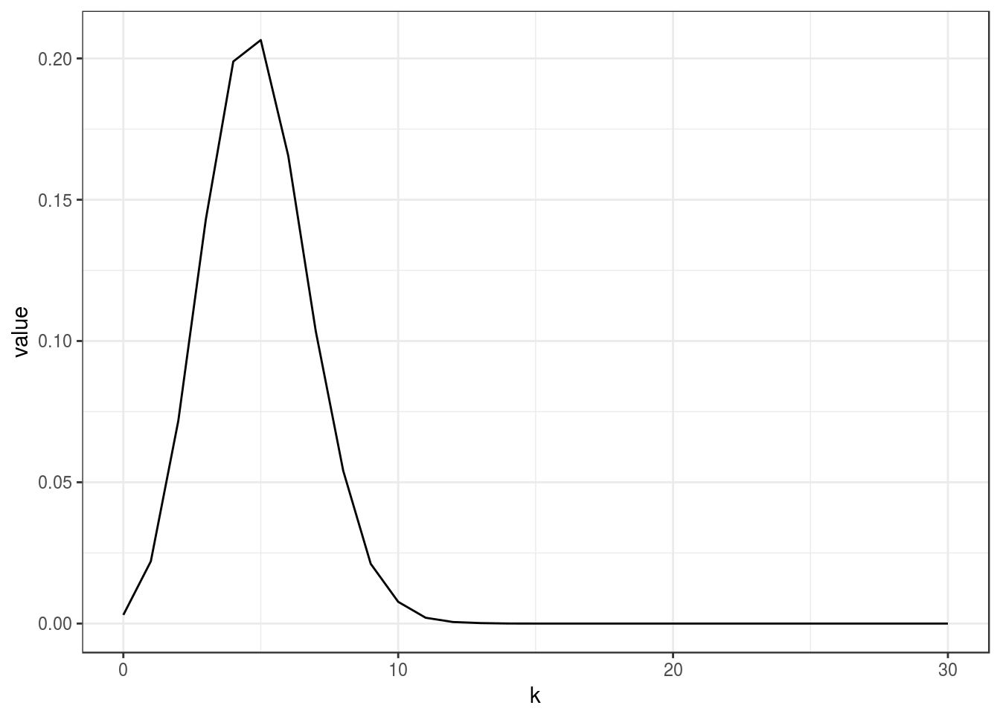
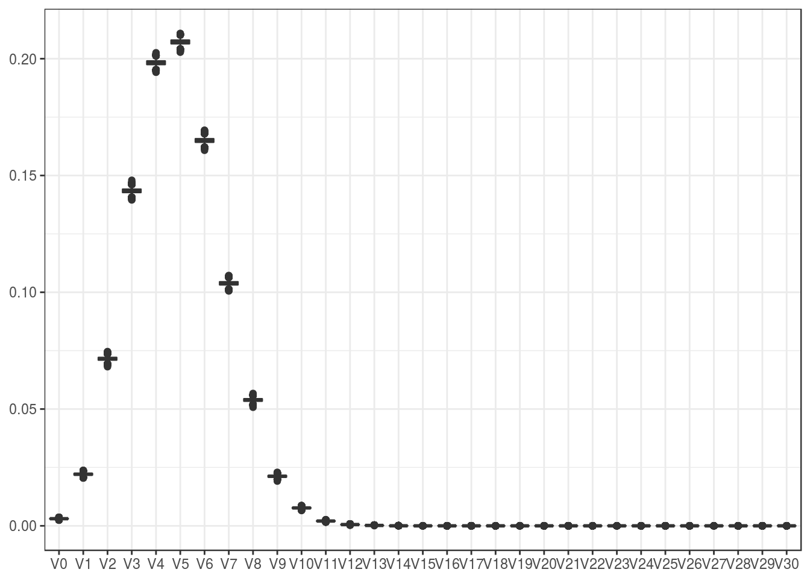
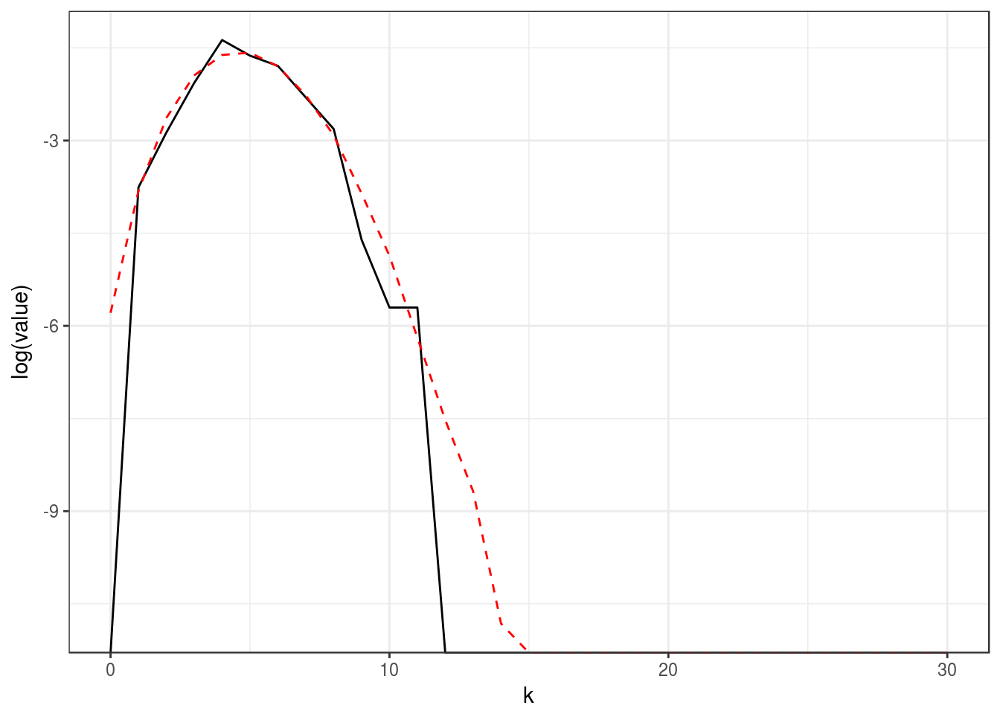
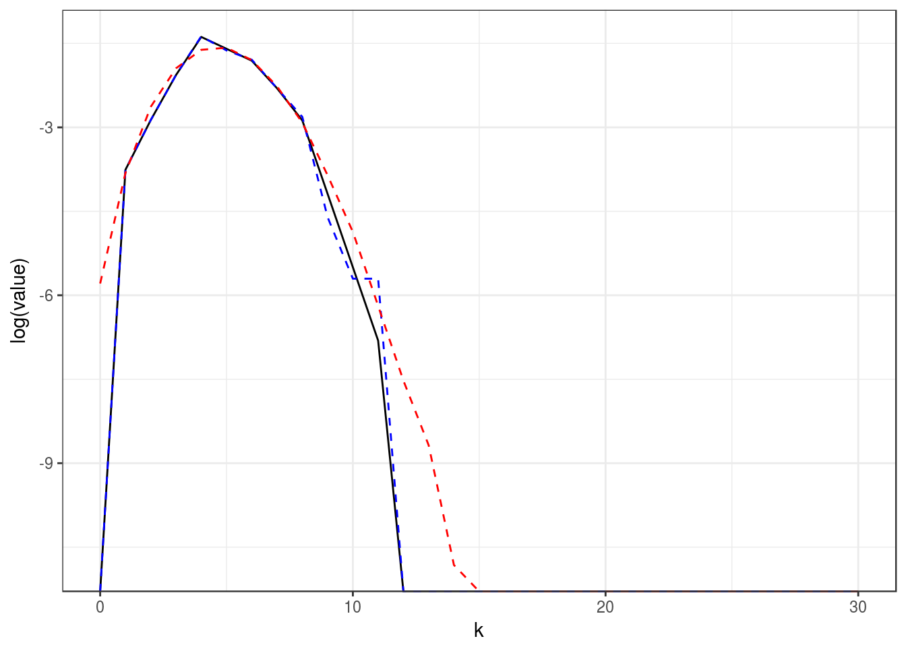
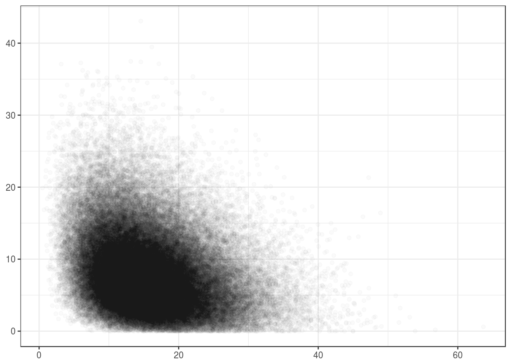

This note introduces the conic intrinsic volumes and the associated (bivariate) chi-bar-squared distributions. The focus is on algorithmic considerations; see the survey paper (Amelunxen and Lotz 2017) and the references therein for more background on the conic intrinsic volumes. We will give further pointers to the literature within the text below.
Other vignettes:
As the name suggests, a closed convex cone \(C\subseteq\text{R}^d\) satisfies the following three properties:
Properties 1. and 3. imply that every nonzero closed cone contains the origin, \(0\in C\). Furthermore, if \(0\in C\), then properties 2. and 3. taken together are equivalent to the property \[ \forall x,y\in C,\; \lambda,\mu\geq0 : \lambda x+\mu y\in C \] In other words, a (nonempty) closed convex cone is a closed set, which is closed under nonnegative linear combinations. Compare this to linear subspaces which can be characterized through their closedness under (possibly negative) linear combinations.
Note:
Every closed convex cone \(C\subseteq\text{R}^d\) defines a natural counterpart, its polar cone \[ C^\circ := \{y\in\text{R}^d\mid \forall x\in C: x^Ty\leq 0\} . \] The polar cone is also a closed convex cone, and the polar of the polar cone is the original cone, which in this context is also called the primal cone, \((C^\circ)^\circ = C\). It thus makes sense to think about the primal cone and its polar cone as a primal-polar pair of cones. A cone is called self-dual, if \(C^\circ=-C\).
Note that \((\text{R}^d)^\circ=\{0\}\). Also, polarity behaves well with direct products, \((C\times D)^\circ = C^\circ\times D^\circ\).
The polar cone depends on the ambient space, i.e., if we embed \(C\subseteq\text{R}^d\) in \(\text{R}^e\), \(e\geq d\), by formally identifying \(C\) with \(C\times\{0\}\subseteq\text{R}^e\), then the polar of the embedded cone is given by \((C\times\{0\})^\circ = C^\circ\times\text{R}^{e-d}\) (as opposed to the polar of \(C\) in \(\text{R}^d\) embedded in \(\text{R}^e\)).
If the cone \(C\) is transformed by an invertible linear transformation then its polar cone is transformed by the transpose of the inverse of the transformation: \[ (AC)^\circ = B^T C^\circ ,\qquad \text{if $A$ invertible and } B=A^{-1} . \]
The smallest linear space containing a cone \(C\) is given by \(C+(-C)\), and the largest linear space contained in \(C\), called the lineality space of \(C\), is given by \(C\cap (-C)\). Linear hull and lineality space are related by polarity, as
\[ C^\circ+(-C^\circ) = (C\cap (-C))^\bot ,\quad C^\circ\cap(-C^\circ) = (C+(-C))^\bot , \] where \(L^\bot\) denotes the orthogonal complement of a linear space. Every closed convex cone has the natural orthogonal decomposition \[ C = L + \bar C , \] where \(L=C\cap (-C)\) denotes the lineality space, and \(\bar C=\Pi_{L^\bot}(C)\) the image of the projection of \(C\) onto the orthogonal complement of \(L\).
The (linear) dimension of a cone is the dimension of its linear hull, and the lineality of a cone is the dimension of its lineality space,
\[ \text{dim}(C) = \text{dim}(C+(-C)) ,\quad \text{lin}(C) = \text{dim}(C\cap(-C)) . \] Note that by the above polarity statement we have \(\text{dim}(C)=d-\text{lin}(C^\circ)\) and \(\text{lin}(C)=d-\text{dim}(C^\circ)\).
A trivial yet important class of examples of closed convex cones are the linear subspaces. It is easily seen that the polar cone of a linear subspace is just its orthogonal complement. Clearly, a cone is a linear space iff \(\text{dim}(C)=\text{lin}(C)\).
The intrinsic volumes and (bivariate) chi-bar-squared distributions (see below) are in this case equivalent to the dimension of the subspace and the chi-squared distribution (see below for more precise statements).
Furthermore, for cones which are not linear subspaces the intrinsic volumes satisfy an additional linear relation, which is why the algorithms in conivol assume that the underlying closed convex cone is not a linear subspace.
Polyhedral cones are a straightforward generalization of linear subspaces and can be described in two ways, which are related via polarity:
Although the set of polyhedral cones does not exhaust the set of closed convex cones, it can be shown (and it is intuitively clear) that every closed convex cone can be arbitrarily well approximated by polyhedral cones.
For later use we recall that a face of a polyhedral cone is the intersection of a linear hyperplane (linear subspace of codimension one) with the cone, where the cone has to lie entirely in one of the two closed half-spaces defined by the hyperplane. Every polyhedral cone has a finite number of faces, and decomposes into the disjoint union of the relative interiors of its faces, \[ C = \dot{\bigcup_{F\text{ face of } C}} \text{relint}(F) . \]
We can compute the dimension, lineality, the orthogonal decomposition \(C=L+\bar C\), as well as a reduced representation of \(\bar C\) as follows (see (Wets and Witzgall 1967) for more details):
The function polyh_reduce_gen does exactly this. Concretely, for \(C\) defined as above through the matrix \(A\), it finds matrices \[ Q_L\in\text{R}^{d\times\text{lin}(C)} ,
Q_C\in\text{R}^{d\times e} ,
\tilde A\in \text{R}^{e\times m} , \] where \(e=\text{dim}(C)-\text{lin}(C)\), and with \(Q_L^TQ_L=I_{\text{lin}(C)}\) and \(Q_C^TQ_C=I_e\), such that \[ L=Q_L\cdot\text{R}^{\text{lin}(C)} ,\quad
\bar C=Q_C \{\tilde A\tilde z \mid \tilde z\in\text{R}^m,
\tilde z\geq 0\} . \] In other words, the matrix \(\tilde A\) is a reduced form of the matrix \(A\) generating (essentially) the same cone as \(A\).
If the cone is given by inequalities (as is \(C^\circ\); we use a different notation here to avoid confusing notation), like \(D=\{y\in\text{R}^d \mid A^Ty\leq 0\}\), then the orthogonal decomposition \(D=M+\bar D\), with \(M\) denoting the lineality space of \(D\), is given as follows: \[ M=\{y\in\text{R}^d\mid Q_L^Ty=0, Q_C^Ty=0\} ,\quad
\bar D=Q_C \{\tilde y\in\text{R}^e \mid \tilde A^T\tilde y\leq 0\} . \] Where \(Q_L, Q_C, \tilde A\) are the same matrices as above (returned by polyh_reduce_gen); the function polyh_reduce_ineq returns these same matrices but with adjusted values for dimension and lineality of the cone (another reason for having two functions doing essentially the same thing is so that the corresponding help pages do not have to cover both cases).
Example computations:
A <- matrix(c(-(1:4),1:24),4,7); A
#> [,1] [,2] [,3] [,4] [,5] [,6] [,7]
#> [1,] -1 1 5 9 13 17 21
#> [2,] -2 2 6 10 14 18 22
#> [3,] -3 3 7 11 15 19 23
#> [4,] -4 4 8 12 16 20 24
polyh_reduce_gen(A)
#> $dimC
#> [1] 2
#>
#> $linC
#> [1] 1
#>
#> $QL
#> [,1]
#> [1,] -0.1825742
#> [2,] -0.3651484
#> [3,] -0.5477226
#> [4,] -0.7302967
#>
#> $QC
#> [,1]
#> [1,] 8.164966e-01
#> [2,] 4.082483e-01
#> [3,] 3.115041e-16
#> [4,] -4.082483e-01
#>
#> $A_reduced
#> [1] 1
polyh_reduce_ineq(A)
#> $dimC
#> [1] 3
#>
#> $linC
#> [1] 2
#>
#> $QL
#> [,1]
#> [1,] -0.1825742
#> [2,] -0.3651484
#> [3,] -0.5477226
#> [4,] -0.7302967
#>
#> $QC
#> [,1]
#> [1,] 8.164966e-01
#> [2,] 4.082483e-01
#> [3,] 3.115041e-16
#> [4,] -4.082483e-01
#>
#> $A_reduced
#> [1] 1A special class of polyhedral cones is given by so-called simplicial cones. These are full-dimensional cones with a minimal number of edges and facets. Formally, we can describe these cones as positive orthants transformed by an invertible linear transformation: \[ \big\{\text{simplicial cones in }\text{R}^d\big\} = \big\{A\text{R}_+^d\mid A\in\text{R}^{d\times d} \text{ invertible} \big\} . \] In other words, a simplicial cone is generated by the columns of an invertible matrix. Note that since the positive orthant is self-dual, \((\text{R}_+^d)^\circ=-\text{R}_+^d\), we easily obtain the polar cone of a simplicial cone through the inverse matrix, \[ \big( A\text{R}_+^d \big)^\circ = -B^T\text{R}_+^d ,\qquad \text{if $A$ invertible and } B=A^{-1} . \]
A special class of simplicial cones are the Weyl chambers of finite reflection groups of which the most important ones are of class ‘A’, ‘BC’, and ‘D’. These chambers are isometric to the following three cones, \[\begin{align*} C_A & = \big\{ x\in\text{R}^{d+1} \mid x_1 \leq x_2 \leq \dots \leq x_{d+1} \big\} , \\ C_{BC} & = \big\{ x\in\text{R}^d \mid 0\leq x_1 \leq x_2 \leq \dots \leq x_d \big\} , \\ C_D & = \big\{ x\in\text{R}^d \mid -x_2\leq x_1 \leq x_2 \leq \dots \leq x_d \big\} . \end{align*}\] Note that the first cone is strictly speaking not simplicial, as it contains the one-dimensional linear subspace \(L=\{\lambda 1_d\mid \lambda\in\text{R}\}\), where \(1_d\in\text{R}^d\) denotes the all-one vector. However, the projection of \(C\) onto the orthogonal complement of \(L\) yields the natural orthogonal decomposition \(C_A=L+\bar C_A\), and the projection \(\bar C_A\) is indeed a simplicial cone. Using the matrix description \(\{y\in\text{R}^d \mid A^Ty\leq 0\}\), we see that the above defined cones correspond to the matrices \[\begin{align*} A_A & = \begin{pmatrix} 1 \\ -1 & 1 \\ & \ddots & \ddots \\ & & -1 & 1 \\ & & & -1 \end{pmatrix} , & A_{BC} & = \begin{pmatrix} -1 & 1 \\ & \ddots & \ddots \\ & & -1 & 1 \\ & & & -1 \end{pmatrix} , \\ A_D & = \begin{pmatrix} -1 & 1 \\ -1 &-1 & 1 \\ & & -1 & 1 \\ & & & \ddots & \ddots \\ & & & & -1 & 1 \\ & & & & & -1 \end{pmatrix} . \end{align*}\]The truly simplicial cone \(\bar C_A\) corresponds to the matrix \[ \bar A_A = Q^T A_A , \] where \(Q\in \text{R}^{(d+1)\times d}\) is such that its columns form an orthonormal basis of \(L^\bot\).
The polar cones \({C}^\circ_A, \bar C_A^\circ, {C}^\circ_{BC}, {C}^\circ_D\) (the polar cone of \(\bar C_A^\circ\) taken in the ambient space \(L^\bot\)) correspond to the following matrices: \[\begin{align*} {A}^\circ_A & = \begin{pmatrix} -1 & 1 & -d & -d+1 & \dots & -1 \\ -1 & 1 & 1 & -d+1 & & \vdots \\ -1 & 1 & 1 & 2 & \ddots & -1 \\ \vdots & \vdots & \vdots & \vdots & \ddots & -1 \\ -1 & 1 & 1 & 2 & \dots & d \end{pmatrix} , & \bar A_A^\circ & = Q^T \begin{pmatrix} -d & -d+1 & \dots & -1 \\ 1 & -d+1 & & \vdots \\ 1 & 2 & \ddots & -1 \\ \vdots & \vdots & \ddots & -1 \\ 1 & 2 & \dots & d \end{pmatrix} , \\ {A}^\circ_{BC} & = \begin{pmatrix} 1 \\ 1 & 1 \\ \vdots & \dots & \ddots \\ 1 & \dots & \dots & 1 \end{pmatrix} , & {A}^\circ_D & = \begin{pmatrix} 1 & -1 \\ 1 & 1 \\ 1 & 1 & 1 \\ 1 & 1 & 1 & 1 \\ \vdots & \vdots & \vdots & \dots & \ddots \\ 1 & 1 & 1 & \dots & \dots & 1 \end{pmatrix} . \end{align*}\]These matrices can be obtained through the function weyl_matrix.
Example computations:
A <- weyl_matrix(5,"A")
A_red <- weyl_matrix(5,"A_red")
list( A=A, A_red=A_red )
#> $A
#> [,1] [,2] [,3] [,4] [,5]
#> [1,] 1 0 0 0 0
#> [2,] -1 1 0 0 0
#> [3,] 0 -1 1 0 0
#> [4,] 0 0 -1 1 0
#> [5,] 0 0 0 -1 1
#> [6,] 0 0 0 0 -1
#>
#> $A_red
#> [,1] [,2] [,3] [,4] [,5]
#> [1,] -0.5576775 9.659258e-01 -1.115355e+00 9.659258e-01 -0.5576775
#> [2,] -0.8660254 8.660254e-01 1.665335e-16 -8.660254e-01 0.8660254
#> [3,] 0.8164966 -8.326673e-16 -8.164966e-01 1.110223e-15 0.8164966
#> [4,] -0.5000000 -5.000000e-01 3.330669e-16 5.000000e-01 0.5000000
#> [5,] 0.1494292 2.588190e-01 2.988585e-01 2.588190e-01 0.1494292The representing matrices for \(C_A\) and \(\bar C_A\) sure look different, but checking the angles between the columns reveals that they represent the same cone:
t(A) %*% A
#> [,1] [,2] [,3] [,4] [,5]
#> [1,] 2 -1 0 0 0
#> [2,] -1 2 -1 0 0
#> [3,] 0 -1 2 -1 0
#> [4,] 0 0 -1 2 -1
#> [5,] 0 0 0 -1 2
round( t(A_red) %*% A_red ,digits=14)
#> [,1] [,2] [,3] [,4] [,5]
#> [1,] 2 -1 0 0 0
#> [2,] -1 2 -1 0 0
#> [3,] 0 -1 2 -1 0
#> [4,] 0 0 -1 2 -1
#> [5,] 0 0 0 -1 2where \(\|\cdot\|\) denotes the Euclidean norm.
The circular cones form a class of cones, which is interesting for both theoretical and practical purposes. For theoretical purposes because circular cones are known to satisfy certain extreme inequalities (see below), and are suspected to satisfy even more; and for practical purposes because they, and products of them, provide a reasonably large, yet accessible, class of cones which is easy to analyze with respect to the intrinsic volumes.
A circular cone is self-dual iff the angle is \(\pi/4\). These special cones are called Lorentz cone or ice-cream cone. We denote these by \(\mathcal{L}^d=\text{Circ}_d(\pi/4)\).
with \(\alpha_1\geq\dots\geq\alpha_{d-1}>0\), the semiaxes of the cone. See the appendix for a proof of that fact. The proof also shows how to compute the semiaxes: if \(-\lambda_1\leq\dots\leq-\lambda_{d-1}<0\) and \(\mu>0\) denote the eigenvalues of \(AJA^T\), where \(J=\text{diag}(-1,\ldots,-1,1)\), then the semiaxes of \(A\) are given by \(\alpha_k=\sqrt{\lambda_k/\mu}\), \(k=1,\ldots,d-1\). This calculation is implemented in ellips_semiax.
Example computations:
d <- 5
ellips_semiax( diag(d:1) )
#> [1] 5 4 3 2The semiaxes of an ellipsoidal cone in standard form are surely found; let’s also test if they are found for a randomly rotated cone:
Q <- svd( matrix(rnorm(d^2),d,d) )$u # find random rotation
round( t(Q) %*% Q, 14 ) # test orthogonality
#> [,1] [,2] [,3] [,4] [,5]
#> [1,] 1 0 0 0 0
#> [2,] 0 1 0 0 0
#> [3,] 0 0 1 0 0
#> [4,] 0 0 0 1 0
#> [5,] 0 0 0 0 1
ellips_semiax( Q %*% diag(d:1) ) # compute semiaxes of rotated cone
#> [1] 5 4 3 2The conic intrinsic volumes of a closed convex cone \(C\subseteq\text{R}^d\) form a \((d+1)\)-element vector, \[ v(C) = (v_0(C),\ldots,v_d(C)) \geq 0 ,\quad \sum_{k=0}^d v_k(C) = 1 . \] Since this vector lies in the probability simplex, it defines a corresponding categorical distribution on \(\{0,\ldots,d\}\), which we will refer to as the intrinsic volumes distribution.
If \(C\) is a polyhedral cone, then the intrinsic volumes can be characterized in the following way: letting \(g\sim N(0,I_d)\) a Gaussian vector (coordinates are iid standard normal) and denoting the projection map onto \(C\) by \(\Pi_C\colon\text{R}^d\to C\), \(\Pi_C(z) = \text{argmin}\{\|x-z\|\mid x\in C\}\), the \(k\)th intrinsic volume is given as the probability that \(\Pi_C(g)\) lies in the relative interior of a \(k\)-dimensional face of \(C\), \[ v_k(C) = \text{Prob}\big\{\Pi_C(g)\in \text{relint}(F), F \text{ face of }C, \dim(F)=k\big\} . \] This characterization holds exclusively for polyhedral cones.
Note that the above characterization also provides a simple way to sample from the intrinsic volumes distribution: sample a Gaussian vector, project it onto the cone \(C\), determine the dimension of the face containing the projection in its relative interior. This procedure is implemented in polyh_rivols_gen and polyh_rivols_ineq.
If \(C=L\) is a linear subspace, then \[ v_k(L) = \begin{cases} 1 & \text{if } k=\dim(L) \\ 0 & \text{else} . \end{cases} \] It can be shown that if \(C\) is not a linear subspace, then \[ v_0(C)+v_2(C)+v_4(C)+\cdots = v_1(C)+v_3(C)+v_5(C)+\cdots = \tfrac{1}{2} . \] This linear relation is the reason why in the computations in the conivol functions the underlying closed convex cone is generally assumed to be not a linear subspace.
The intrinsic volumes of the polar cone are the same as those of the primal cone, but the index gets reversed, \[ v_k(C^\circ) = v_{d-k}(C) . \] The intrinsic volumes of a product of cones arise as the convolution of the intrinsic volumes of its components, \[ v_k(C\times D) = \sum_{i+j=k} v_i(C) v_j(D) . \] This convolution is conveniently implemented in prod_ivols.
From the natural orthogonal decomposition \(C = L + \bar C\), where \(L=C\cap (-C)\) and \(\bar C=\Pi_{L^\bot}(C)\), one can show that \(v_k(C)=0\) if \(k<\text{lin}(C)\) or \(k>\text{dim}(C)\) and1 \[ v_k(C)=v_{k-\text{lin}(C)}(\bar C)>0 \quad\text{for}\quad \text{lin}(C)\leq k\leq\text{dim}(C) . \]
The first moment of intrinsic volumes distribution of a cone is called its statistical dimension, \[ \delta(C) = \sum_{k=0}^d k v_k(C) . \] Note that the statistical dimension coincides with the (linear) dimension if \(C\) is a linear subspace. It also generalizes some other properties, such as \(\delta(C^\circ)=d-\delta(C)\) and \(\delta(C\times D)=\delta(C)+\delta(D)\).
For later use we also define the variance of the cone via \[ \text{var}(C) = \sum_{k=0}^d (k-\delta(C))^2 v_k(C) . \]
Example computations:
We start with an illustration of the convolution process for intrinsic volumes of product cones. Note that the intrinsic volumes of a one-dimensional half-line are given by \((\frac12,\frac12)\). The product of \(n\) half-lines yields the positive orthant whose intrinsic volumes are given by the (normalized) binomial coefficients:
v_halfline <- c(1/2,1/2); v_halfline
#> [1] 0.5 0.5
2^4 * prod_ivols( list(v_halfline, v_halfline, v_halfline, v_halfline) )
#> [1] 1 4 6 4 1For another example, consider the data on signatures of mutational processes in human cancer as presented in (Alexandrov Ludmil B. et al. 2013). The data consists of proportions of 96 mutation types in 30 different types of cancer:
address <- "http://cancer.sanger.ac.uk/cancergenome/assets/signatures_probabilities.txt"
A_canc <- readr::read_tsv(address)[ , 1:33]
A <- as.matrix(A_canc[ , 4:33])A quick look at the data…
dim(A)
#> [1] 96 30
A[1:5,1:5]
#> Signature 1 Signature 2 Signature 3 Signature 4 Signature 5
#> [1,] 0.011098326 6.827082e-04 0.02217231 0.0365 0.014941548
#> [2,] 0.009149341 6.191072e-04 0.01787168 0.0309 0.008960918
#> [3,] 0.001490070 9.927896e-05 0.00213834 0.0183 0.002207846
#> [4,] 0.006233885 3.238914e-04 0.01626515 0.0243 0.009206905
#> [5,] 0.001801068 2.634810e-04 0.02400262 0.0097 0.011671022
all(A>=0)
#> [1] TRUE
colSums(A)
#> Signature 1 Signature 2 Signature 3 Signature 4 Signature 5
#> 1 1 1 1 1
#> Signature 6 Signature 7 Signature 8 Signature 9 Signature 10
#> 1 1 1 1 1
#> Signature 11 Signature 12 Signature 13 Signature 14 Signature 15
#> 1 1 1 1 1
#> Signature 16 Signature 17 Signature 18 Signature 19 Signature 20
#> 1 1 1 1 1
#> Signature 21 Signature 22 Signature 23 Signature 24 Signature 25
#> 1 1 1 1 1
#> Signature 26 Signature 27 Signature 28 Signature 29 Signature 30
#> 1 1 1 1 1In order to better understand the landscape of mutational signatures one might be interested in the conic intrinsic volumes of the cone generated by this matrix.
n <- 1e5
S <- polyh_rivols_gen(n,A) # sampling from intrinsic volumes distribution
str(S)
#> List of 7
#> $ dimC : int 30
#> $ linC : int 0
#> $ QL : logi NA
#> $ QC : num [1:96, 1:30] -0.0542 -0.0399 -0.0121 -0.0439 -0.0188 ...
#> $ A_reduced: num [1:30, 1:30] -0.1396 0.085 -0.0189 0.0348 -0.0435 ...
#> ..- attr(*, "dimnames")=List of 2
#> .. ..$ : NULL
#> .. ..$ : chr [1:30] "Signature 1" "Signature 2" "Signature 3" "Signature 4" ...
#> $ samples : int [1:100000] 5 4 7 4 3 7 4 6 6 8 ...
#> $ multsamp : int [1:97] 306 2203 7178 14297 19892 20651 16553 10351 5407 2115 ...
linC <- S$linC
dimC <- S$dimC
msamp <- S$multsampWe can look at the point estimate for the intrinsic volumes given by this sample:
tib_plot <- tibble( k=linC:dimC, value=msamp[1+linC:dimC]/n )
ggplot(tib_plot, aes(x=k, y=value)) + geom_line() + theme_bw()
ggplot(tib_plot, aes(x=k, y=log(value))) + geom_line() + theme_bw()We can also look at the corresponding Bayes posterior:
bayes_est <- polyh_bayes( msamp, dimC, linC )
tib_plot_bay <- bayes_est$post_samp(1e4) %>%
as_tibble() %>%
`colnames<-`(paste0(rep("V",dimC-linC+1),as.character(linC:dimC))) %>%
gather(factor_key=TRUE)
ggplot(tib_plot_bay, aes(x=key, y=value)) +
geom_boxplot() + theme_bw() +
theme(axis.title.x=element_blank(), axis.title.y=element_blank())
Of course, the error bars are not too interesting in this case, as the sample size is quite large. So for illustration purpose we resample with much smaller sample size:
n_sm <- 3e2
set.seed(1111)
S_sm <- polyh_rivols_gen(n_sm,A)
msamp_sm <- S_sm$multsamp
# point estimate:
tib_plot_sm <- tibble( k=linC:dimC, value=msamp_sm[1+linC:dimC]/n_sm )
ggplot(tib_plot_sm, aes(x=k, y=value)) + geom_line() + theme_bw() +
geom_line(data=tib_plot, aes(x=k, y=value), linetype="dashed", color="red")ggplot(tib_plot_sm, aes(x=k, y=log(value))) + geom_line() + theme_bw() +
geom_line(data=tib_plot, aes(x=k, y=log(value)), linetype="dashed", color="red")
# Bayes posterior:
bayes_est_sm <- polyh_bayes( msamp_sm, dimC, linC )
tib_plot_bay_sm <- bayes_est_sm$post_samp(1e4) %>%
as_tibble() %>%
`colnames<-`(paste0(rep("V",dimC-linC+1),as.character(linC:dimC))) %>%
gather(factor_key=TRUE)
ggplot(tib_plot_bay_sm, aes(x=key, y=value)) +
geom_boxplot() + theme_bw() +
theme(axis.title.x=element_blank(), axis.title.y=element_blank()) +
geom_line(data=tib_plot, aes(x=k+1, y=value), linetype="dashed", color="red")In a situation with too few data points one may improve the estimate by assuming log-concavity of the intrinsic volumes; see the discussion below for more information about log-concavity of intrinsic volumes. The package logcondiscr (CRAN) offers functionalities to compute the log-concave maximum likelihood estimate, see (Balabdaoui et al. 2013):
logconc_MLE <- logConDiscrMLE(S_sm$samples, output=FALSE)
log_est <- rep(0,dimC-linC+1)
log_est[logconc_MLE$x+linC+1] <- exp(logconc_MLE$psi)
# log-concavity improved point estimate:
tib_plot_logc <- tibble( k=linC:dimC, value=log_est )
ggplot(tib_plot_logc, aes(x=k, y=value)) + geom_line() + theme_bw() +
geom_line(data=tib_plot_sm, aes(x=k, y=value), linetype="dashed", color="blue") +
geom_line(data=tib_plot, aes(x=k, y=value), linetype="dashed", color="red")ggplot(tib_plot_logc, aes(x=k, y=log(value))) + geom_line() + theme_bw() +
geom_line(data=tib_plot_sm, aes(x=k, y=log(value)), linetype="dashed", color="blue") +
geom_line(data=tib_plot, aes(x=k, y=log(value)), linetype="dashed", color="red")
As for Bayesian posteriors enforcing log-concavity, conivol supports this functionality through the MCMC sampler Stan. See the vignette on Bayesian estimates for conic intrinsic volumes for information and example computations for this case.
Note that the intrinsic volumes of \(C_A\) are the normalized Stirling numbers of the first kind. These formulas are implemented in weyl_ivols.
Example computations:
factorial(6) * weyl_ivols(5,"A")
#> [1] 0 120 274 225 85 15 1
factorial(6) * weyl_ivols(5,"A_red") # intrinsic volumes of reduced cone are just shifted
#> [1] 120 274 225 85 15 1
2^5*factorial(5) * weyl_ivols(5,"BC")
#> [1] 945 1689 950 230 25 1
2^4*factorial(5) * weyl_ivols(5,"D")
#> [1] 420 809 520 150 20 1The intrinsic volumes of product cones are obtained via convolution:
factorial(6)*2^5*factorial(5) * weyl_ivols( c(5,5) , c("A","BC"), product=TRUE )
#> [1] 0 113400 461610 789411 748250 437510 165750 41388 6750 690
#> [11] 40 1
v_list <- weyl_ivols( c(5,5) , c("A","BC") )
factorial(6)*2^5*factorial(5) * prod_ivols(v_list)
#> [1] 0 113400 461610 789411 748250 437510 165750 41388 6750 690
#> [11] 40 1The intrinsic volumes of circular cones are given by the following formulas: \[ v_k(\text{Circ}_d(\alpha)) = \begin{cases}
\displaystyle\frac{\Gamma(\frac{d}{2})}{\Gamma(\frac{k+1}{2})\Gamma(\frac{d-k+1}{2})}
\frac{p^{(k-1)/2} (1-p)^{(d-k-1)/2}}{2} & \text{if } 0<k<d
\\[1mm] \displaystyle\frac{I_p(\tfrac{d-1}{2},\tfrac{1}{2})}{2} & \text{if } k=d
\\[1mm] \displaystyle\frac{I_{1-p}(\tfrac{d-1}{2},\tfrac{1}{2})}{2} & \text{if } k=0
\end{cases} \] where \(p=\sin^2(\alpha)\) and where \(I_p(a,b)\) denotes the regularized incomplete beta function, that is, the cdf of the corresponding Beta distribution. These formulas are implemented in circ_ivols.
Note that if \(d\) is even, then the intrinsic volumes with odd indices form the (half-)weights of a binomial distribution: \[ 2v_{2k+1}(\text{Circ}_d(\alpha)) = \binom{d/2-1}{k} p^k (1-p)^{d/2-1-k} . \]
Example computations:
v <- circ_ivols(10,pi/5)
v
#> [1] 0.028604594 0.091755300 0.155208053 0.193737296 0.191167084
#> [6] 0.153400429 0.100910230 0.053983047 0.022828664 0.007123927
#> [11] 0.001281375
sum(v)
#> [1] 1
sum( v[ 2*(1:5) ] ) # odd index intrinsic volumes add up to 1/2
#> [1] 0.5
2 * v[ 2*(1:5) ] # comparing with binomial distribution
#> [1] 0.18351060 0.38747459 0.30680086 0.10796609 0.01424785
dbinom(0:4,4,sin(pi/5)^2)
#> [1] 0.18351060 0.38747459 0.30680086 0.10796609 0.01424785For \(k\geq0\) let \(F_k\) denote the cumulative distribution function (cdf) of the \(\chi_k^2\) distribution, with \(F_0(t)=1_{\geq0}(t)\). The chi-bar-squared distribution with weight vector \(v=(v_0,\ldots,v_d)\), where \(v\geq0\) and \(\sum_{k=0}^dv_k=1\), can be characterized through its cdf via \[ F_v(t) = \sum_{k=0}^d v_k F_k(t) . \] In terms of random variables, one can think of sampling from the chi-bar-squared distribution as a two-step procedure:
The bivariate chi-bar-squared distribution with weight vector \(v\) can similarly be characterized through its cdf via \[ \Phi_v(s,t) = \sum_{k=0}^d v_k F_k(s) F_{d-k}(t) . \] In terms of random variables, one can again think of sampling \((x,y)\) from the chi-bar-squared distribution as a two-step procedure:
This sampling procedure is useful for the understanding of the EM algorithm in estim_em but for the relation to closed convex cones the following sampling procedure of the chi-bar-squared distribution is more intuitive:
The (bivariate) chi-bar-squared distribution corresponding to a closed convex cone \(C\) is of course the one arising from taking the conic intrinsic volumes as weights; in terms of the cdf, \[ F_C(t) = \sum_{k=0}^d v_k(C) F_k(t) ,\qquad \Phi_C(s,t) = \sum_{k=0}^d v_k(C) F_k(s) F_{d-k}(t) . \] A natural sampling for these distributions (without knowing the intrinsic volumes) involves the projection map \(\Pi_C\). Denoting by \(g\sim N(0,I_d)\) again a Gaussian vector, one can show that the chi-bar-squared and the bivariate chi-bar-squared distributions are given by the distributions of the random variables \[ \|\Pi_C(g)\|^2 \quad\text{and}\quad \big(\|\Pi_C(g)\|^2,\|\Pi_{C^\circ}(g)\|^2\big) . \] The fact that these random variables have the (bivariate) chi-bar-squared distribution with weights given by the conic intrinsic volumes is one form of the Conic Steiner Theorem, see (McCoy and Tropp 2014).
The moments of the continuous random variables \(\|\Pi_C(g)\|^2, \|\Pi_{C^\circ}(g)\|^2\) are closely related with those of the discrete random variable defined by the intrinsic volumes. In fact, for the first and second moment we obtain the following: \[\begin{align*} \delta(C) & = \text{E}\big[\|\Pi_C(g)\|^2\big] \\ & = d-\text{E}\big[\|\Pi_{C^\circ}(g)\|^2\big] , \\ \text{var}(C) & = \text{var}\big(\|\Pi_C(g)\|^2\big)-2\delta(C) \\ & = \text{var}\big(\|\Pi_{C^\circ}(g)\|^2\big)-2(d-\delta(C)) . \end{align*}\]These formulas underlie the estimation that is implemented in estim_statdim_var. See the EM algorithm vignette for more details.
Example computations:
# sample from the bivariate chi-bar-squared distribution of a product of circular cones
D <- c(7,17)
alpha <- c(0.7*pi/2, 0.6*pi/2)
v_true <- circ_ivols( D, alpha, product=TRUE)
m_samp <- rbichibarsq(1e5, v_true)
d <- sum(D)
# scatter plot of the sample
ggplot(as_tibble(m_samp), aes(V1,V2)) + geom_point(alpha=.02) +
theme_bw() +
theme(axis.title.x=element_blank(),axis.title.y=element_blank())
# estimate moments, compare with true values
est <- estim_statdim_var(d, m_samp); est
#> $delta
#> [1] 15.84497
#>
#> $var
#> [1] 8.348348
list( statdim_true=sum((0:d)*v_true),
var_true=sum((0:d)^2*v_true)-sum((0:d)*v_true)^2 )
#> $statdim_true
#> [1] 15.83725
#>
#> $var_true
#> [1] 8.656292Finally, we collect inequalities, known and conjectured, that help our understanding of the intrinsic volumes, and that have already or might potentially prove useful in applications. In particular, the log-concavity inequalities are useful in the estimation of intrinsic volumes from sampling data.
Note that \(t_k=(h_k+h_{k+1})/2\), so the following inequalities for \(t_k\) follow directly from those for \(h_k\).
The above two-functionals are monotonically increasing in both the indices and in the arguments: let \(C,D\) be cones with \(C\subseteq D\), \[\begin{align*} t_k(C) & \leq t_{k+1}(C) , & t_k(C) & \leq t_k(D) , & h_k(C) & \leq h_{k+1}(C) , & h_k(C) & \leq h_k(D) . \end{align*}\]So far the only known inequality for the variance of the intrinsic volumes is \[ \text{var}(C) \leq 2\text{min}\{\delta(C),d-\delta(C)\} , \] which was shown in (McCoy and Tropp 2014). We think that this inequality can be greatly improved (see the example computations below) through a new form of isoperimetric inequalities.
We conjecture that among all \(d\)-dimensional cones of a specific statistical dimension the variance of the intrinsic volumes is maximized by the corresponding \(d\)-dimensional circular cone of the same statistical dimension: if \(C\subseteq\text{R}^d\) is a closed convex cone, then \[ \delta(C)=\delta(\text{Circ}_d) \quad \stackrel{?}{\Rightarrow} \quad \text{var}(C)\leq\text{var}(\text{Circ}_d) . \] Using the tail functionals this conjecture can be quivalently stated in the form \[ \sum_{k=1}^d t_k(C)=\sum_{k=1}^d t_k(\text{Circ}_d) \quad \stackrel{?}{\Rightarrow} \quad \sum_{k=1}^d k t_k(C)\leq\sum_{k=1}^d k t_k(\text{Circ}_d) . \] By the above described relation between the intrinsic volumes distribution and the chi-bar-squared distribution, we can also state the conjecture in the following way: \[ \text{E}\big[ \|\Pi_C(g)\|^2 \big] = \text{E}\big[ \|\Pi_{\text{Circ}_d}(g)\|^2 \big] \quad \stackrel{?}{\Rightarrow} \quad \text{E}\big[ \|\Pi_C(g)\|^4 \big] \leq \text{E}\big[ \|\Pi_{\text{Circ}_d}(g)\|^4 \big] . \]
Example computations: We test the above conjecture for products of circular cones in dimension \(d=9\). We first compare the (statistical dimension, variance) plots of circular cones of dimensions \(2,3,\ldots,9\).
d <- 9
N <- 1e3
alpha <- (0:N)/N * pi/2
Sdim <- matrix(0,d-1,N+1)
Var <- matrix(0,d-1,N+1)
for (k in 2:d) {
V <- circ_ivols( rep(k,N+1) , alpha)
Sdim[k-1,] <- sapply(V, function(v) return(sum((0:k) * v)))
Var[k-1,] <- sapply(V, function(v) return(sum((0:k)^2 * v)))-Sdim[k-1,]^2
}
G <- ggplot()
for (k in 2:d) {
G <- G + geom_line(data=tibble(sdim=Sdim[k-1,],var=Var[k-1,]), aes(sdim,var))
}
G <- G + theme_bw()
GNote that considering direct products with linear subspaces just amounts to shifts along the x-axis, so we will not consider this. Instead, we consider direct products of circular cones. Note that the number of different combinations is given by the partition function:
P <- parts(d); P
#>
#> [1,] 9 8 7 7 6 6 6 5 5 5 5 5 4 4 4 4 4 4 3 3 3 3 3 3 3 2 2 2 2 1
#> [2,] 0 1 2 1 3 2 1 4 3 2 2 1 4 3 3 2 2 1 3 3 3 2 2 2 1 2 2 2 1 1
#> [3,] 0 0 0 1 0 1 1 0 1 2 1 1 1 2 1 2 1 1 3 2 1 2 2 1 1 2 2 1 1 1
#> [4,] 0 0 0 0 0 0 1 0 0 0 1 1 0 0 1 1 1 1 0 1 1 2 1 1 1 2 1 1 1 1
#> [5,] 0 0 0 0 0 0 0 0 0 0 0 1 0 0 0 0 1 1 0 0 1 0 1 1 1 1 1 1 1 1
#> [6,] 0 0 0 0 0 0 0 0 0 0 0 0 0 0 0 0 0 1 0 0 0 0 0 1 1 0 1 1 1 1
#> [7,] 0 0 0 0 0 0 0 0 0 0 0 0 0 0 0 0 0 0 0 0 0 0 0 0 1 0 0 1 1 1
#> [8,] 0 0 0 0 0 0 0 0 0 0 0 0 0 0 0 0 0 0 0 0 0 0 0 0 0 0 0 0 1 1
#> [9,] 0 0 0 0 0 0 0 0 0 0 0 0 0 0 0 0 0 0 0 0 0 0 0 0 0 0 0 0 0 1Note that one-dimensional circular cones are just half-lines, so whenever a partition only contains half-lines and a single non-half-line, then we obtain a curve, as above. Collecting this in one plot, we obtain the following:
sing <- which(colSums(P>1)==1)
G <- ggplot()
for (k in sing) {
n_ray <- sum(P[,k]==1)
sdim <- Sdim[ P[1,k]-1, ] + n_ray/2
var <- Var[ P[1,k]-1, ] + n_ray/4
G <- G + geom_line(data=tibble(sdim,var), aes(sdim,var))
}
G <- G + theme_bw(); GFinally, we obtain the following plots for the remaining products of circular cones:
Log-concavity, as the name suggests, means concavity of the logarithms. In the context of intrinsic volumes this means \(\log v_k(C) \stackrel{?}{\geq} \frac{\log v_{k-1}(C)+\log v_{k+1}(C)}{2}\), equivalently, \[ v_k(C)^2 \stackrel{?}{\geq} v_{k-1}(C) v_{k+1}(C) . \] These inequalities imply unimodality, and are in general useful for estimating intrinsic volumes; cp. the vignettes Estimating conic intrinsic volumes from bivariate chi-bar-squared data and Bayesian estimates for conic intrinsic volumes. Unfortunately, these inequalities are so far just conjectured for general cones; they are true for circular cones, Weyl chambers, and direct products of cones for which they are known to hold.
In the euclidean case the log-concavity of the euclidean intrinsic volumes follows from the Alexandrov-Fenchel inequality, and it can easily be shown that log-concavity of conic intrinsic volumes directly implies log-concavity of euclidean intrinsic volumes.
As for the other direction, it can be shown that in dimension \(d\leq5\) log-concavity of conic intrinsic volumes does indeed hold and follows from the Alexandrov-Fenchel inequality. For general dimensions it seems that this inequality is not enough.
According to (Loewy and Schneider 1975) this implies that either \(\text{diag}(\alpha_1^{-1}, \ldots,\alpha_{d-1}^{-1},1)Q^TA\mathcal L^d=\mathcal L^d\) or \(\text{diag}(\alpha_1^{-1},\ldots,\alpha_{d-1}^{-1},1)Q^TA\mathcal L^d =-\mathcal L^d\). Denoting \(\mathcal{E}_\alpha=\text{diag}(\alpha_1,\ldots,\alpha_{d-1},1)\mathcal L^d\), we see that either \(A\mathcal L^d=Q\mathcal{E}_\alpha\) or \(A\mathcal L^d=-Q\mathcal{E}_\alpha\). In both cases we see that \(A\mathcal L^d\) is isometric to \(\mathcal{E}_\alpha\).
Alexandrov Ludmil B., Nik-Zainal Serena, Wedge David C., Aparicio Samuel A. J. R., Behjati Sam, Biankin Andrew V., Bignell Graham R., et al. 2013. “Signatures of mutational processes in human cancer.” Nature 500 (7463). Nature Publishing Group, a division of Macmillan Publishers Limited. All Rights Reserved.: 415–21. doi:10.1038/nature12477.
Amelunxen, Dennis, and Martin Lotz. 2017. “Intrinsic Volumes of Polyhedral Cones: A Combinatorial Perspective.” Discrete Comput. Geom. 58 (2): 371–409. doi:10.1007/s00454-017-9904-9.
Balabdaoui, Fadoua, Hanna Jankowski, Kaspar Rufibach, and Marios Pavlides. 2013. “Asymptotics of the Discrete Log-Concave Maximum Likelihood Estimator and Related Applications.” J. R. Stat. Soc. Ser. B. Stat. Methodol. 75 (4): 769–90. https://doi.org/10.1111/rssb.12011.
Loewy, Raphael, and Hans Schneider. 1975. “Positive Operators on the \(n\)-Dimensional Ice Cream Cone.” J. Math. Anal. Appl. 49: 375–92. doi:10.1016/0022-247X(75)90186-9.
Makowski, Matthias, and Julian Scheuer. 2016. “Rigidity Results, Inverse Curvature Flows and Alexandrov-Fenchel Type Inequalities in the Sphere.” Asian J. Math. 20 (5): 869–92. doi:10.4310/AJM.2016.v20.n5.a2.
McCoy, Michael B., and Joel A. Tropp. 2014. “From Steiner Formulas for Cones to Concentration of Intrinsic Volumes.” Discrete Comput. Geom. 51 (4): 926–63. doi:10.1007/s00454-014-9595-4.
Wets, Roger J.-B., and Christoph Witzgall. 1967. “Algorithms for Frames and Lineality Spaces of Cones.” J. Res. Nat. Bur. Standards Sect. B 71B: 1–7.
The strictly positive inequalities actually require a proof in the nonpolyhedral case (and without having log-concavity); one can deduce this from the kinematic formula by projecting the cone on a uniformly random linear subspace and looking at the volume of the (relative) boundary of the projection.↩